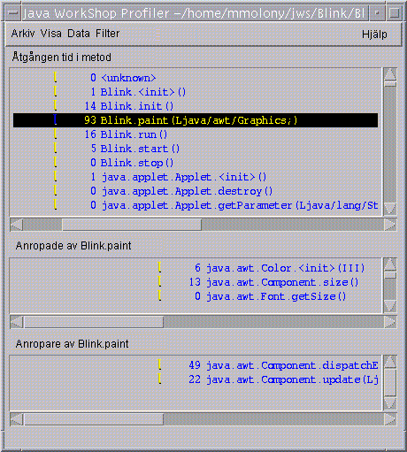

Övning fyra: Insamling av profildata
I den här övningen visar vi hur du ska köra projektet Blink med Java Development Environments profiler. Profilerna hjälper dig analysera ditt programs prestanda för att kunna avgöra hur mycket tid som läggs ned i varje varje programs metod och hur många gånger varje metod exekveras.- Kontrollera i Projekthanteraren efter namnet på aktuellt projekt.
Om aktuellt projekt inte är Blink dubbelklickar du på projektnamnet Blink. - Starta profileringen av projektet Blink genom att klicka på knappen Profilera
 i
Java Development Environments verktygsfält.
i
Java Development Environments verktygsfält.
Fönstret Applet Viewer visas. - Vänta minst 45 sekunder innan du fortsätter med nästa steg.
- Avsluta profiler-sessionen genom att välja
Miniprogram -> Avsluta i Applet Viewer.
Efter profileringen av programmet visar fönstret Profil de data som skrivits till projektets fil i källkatalogen, Blink.prof. - I fönstret Profil väljer du
Filter -> Inga för att visa systemets klassdata. - Välj
Visa -> Sortera efter namn för att visa metoddata i alfabetisk ordning. - Välj metoden Blink.paint (Ljava/awt/Graphics;).
- Titta på profildata igen, med resultat som liknar det nedanstående:
På så sätt får du tillräckligt med data för att kunna visa profileringen.

Resultaten visar att:
- Java Development Environment har använt 93 millisekunder för att anropa metoden Blink.paint (Ljava/awt/Graphics;).
- Blink.paint (Ljava/awt/Graphics;) anropar tre metoder: java.awt.Color.<init> (III), java.awt.Component.size () och java.awt.Font.getSize ().
- De två metoderna som anropar metoden Blink.paint (Ljava/awt/Graphics;) är: java.awt.Component.dispatchEventImpl (Ljava/awt/AWTEvent;) och java.awt.Component.update (Ljava/awt/Graphics;).
 Nästa lektion:
Nästa lektion:
- Nu är du klar med lektionerna i den här självstudien. Nästa självstudie är Självstudie två: Redigera projektattribut.